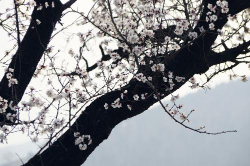
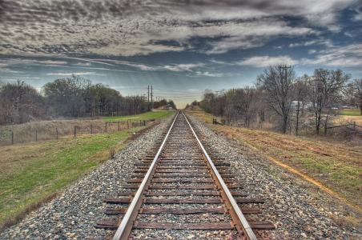

我的日记本
秋天过去的时候，我打上一辆火车。我不知道它要去往的方向。那铁路无休无止的延伸着
心情轨迹
无意间发现，白云的上面，长着许许多多的蒲公英。它在我面前迅速的长大，风吹过的时候，纷纷飞起，飞向无数的远方
每次乘火车出行，我都会有一种强烈的感受：“这就是人间风景啊！”窗外丘陵山谷、河流湖泊已是难得，更重要的是，那些山川里的人迹，那些房屋、田野、道路、桥梁，跟随火车行驶在大地上的时候，更能感受人与自然的关系。
通过他，观众也能有所体悟，能够发现，世界不是只有我们在新闻里看到的那部分，也不仅是我们周边的生活，还有很多不易进入我们眼帘的存在，除了愤怒、激烈，还有亘远、绵长。
这是四点零八分的北京 一片手的海浪翻动 这是四点零八分的北京 一声尖厉的汽笛长鸣 北京车站高大的建筑 突然一阵剧烈地抖动 我吃惊地望着窗外 不知发生了什么事情 我的心骤然一阵疼痛，一定是 妈妈缀扣子的针线穿透了心胸 这时，我的心变成了一只风筝 风筝的线绳就在妈妈的手中